Algorithmic Trading with MATLAB®: Moving Average and RSI
This demo extends work done in AlgoTradingDemo1.m and adds an RSI technical indicator to the mix. Copyright 2010, The MathWorks, Inc. All rights reserved.
Contents
Load in some data
This time we'll import Bund data sampled minutely
load bund1min testPts = floor(0.8*length(data(:,4))); step = 30; % 30 minute interval BundClose = data(1:step:testPts,4); BundCloseV = data(testPts+1:step:end,4); annualScaling = sqrt(250*60*11/step); cost = 0.01;
RSI on data series
rs = rsindex(BundClose,14);
plot(rs), title('RSI')
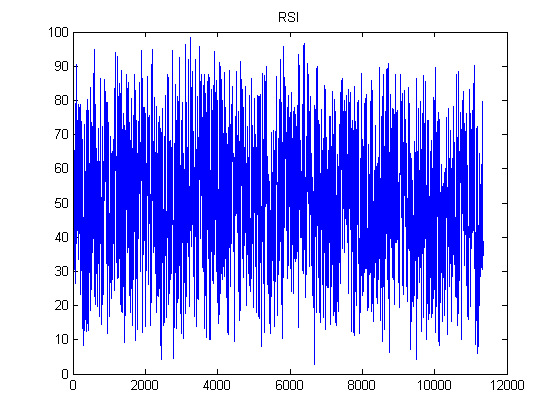 RSI on detrended series
RSI can often be improved by removing the longer term trend. Here's how to run it a detrended series.
rs2 = rsindex(BundClose-movavg(BundClose,30,30),14); hold on plot(rs2,'g') legend('RSI on raw data','RSI on detrended data') hold off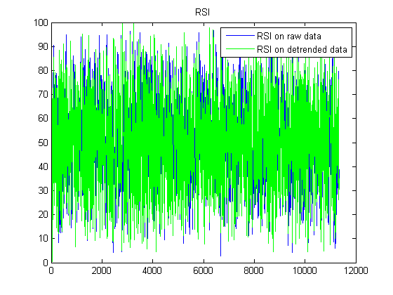
RSI trading strategy. Note that the trading signal is generated when the RSI value is above/below the upper/lower threshold. We'll use a 65% threshld (for the upper, the lower is 1-0.65 = 35%).
rsi(BundClose,[15*20,20],65,annualScaling,cost)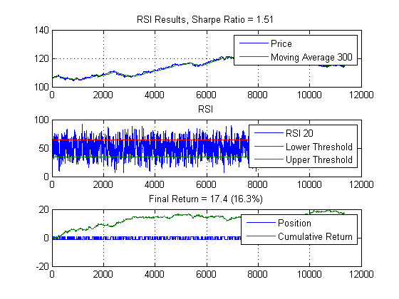
RSI performance
Let's find the best perfrorming set of parameters. In the interest of time, I'll set the threshold to 55 (found earlier).
range = {1:300,1:300,55}; % replace 55 by this to do the sweep 50:5:100};
rsfun = @(x) rsiFun(x,BundClose,annualScaling,cost);
tic
[~,param] = parameterSweep(rsfun,range);
toc
rsi(BundClose,param(1:2),param(3),annualScaling,cost)
Elapsed time is 118.974686 seconds.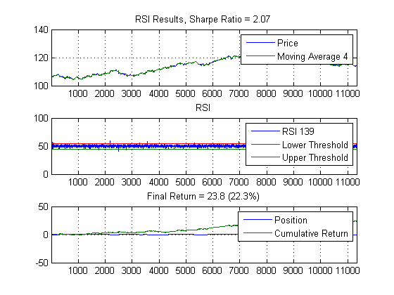
Test on validation set
rsi(BundCloseV,param(1:2),param(3),annualScaling,cost)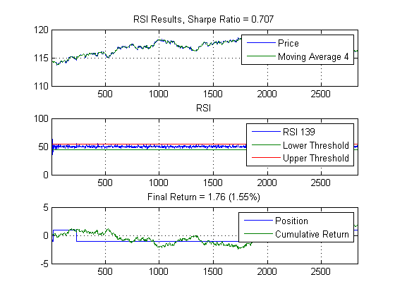
MA + RSI
Put the moving average together with the RSI.
N = 10; M = 394; % from previous calibration [sr,rr,shr] = rsi(BundClose,param(1:2),param(3),annualScaling,cost); [sl,rl,shl,lead,lag] = leadlag(BundClose,N,M,annualScaling,cost); s = (sr+sl)/2; r = [0; s(1:end-1).*diff(BundClose)-abs(diff(s))*cost/2]; sh = annualScaling*sharpe(r,0); figure ax(1) = subplot(2,1,1); plot([BundClose,lead,lag]); grid on legend('Close',['Lead ',num2str(N)],['Lag ',num2str(M)],'Location','Best') title(['MA+RSI Results, Annual Sharpe Ratio = ',num2str(sh,3)]) ax(2) = subplot(2,1,2); plot([s,cumsum(r)]); grid on legend('Position','Cumulative Return','Location','Best') title(['Final Return = ',num2str(sum(r),3),' (',num2str(sum(r)/BundClose(1)*100,3),'%)']) linkaxes(ax,'x')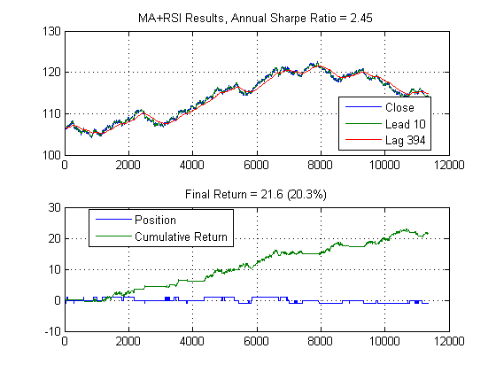
MA+RSI model
The model in a single function call.
marsi(BundClose,N,M,param(1:2),param(3),annualScaling,cost)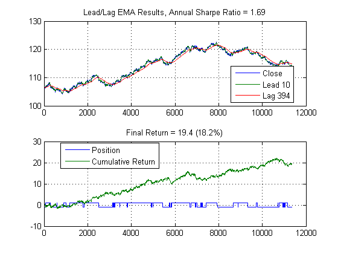 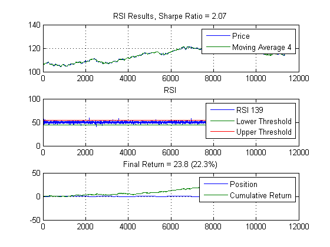 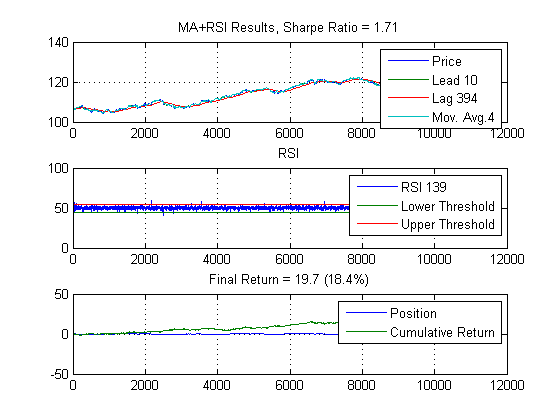
Best parameters
And the best parameters are? Note that this result is better than the calibration for MA or RSI alone (see AlgoTradingDemo1.m).
range = {1:10, 350:400, 2:10, 100:10:140, 55};
fun = @(x) marsiFun(x,BundClose,annualScaling,cost);
tic
[maxSharpe,param,sh] = parameterSweep(fun,range);
toc
param
marsi(BundClose,param(1),param(2),param(3:4),param(5),annualScaling,cost)
Elapsed time is 49.226492 seconds.
param =
2 396 2 110 55
 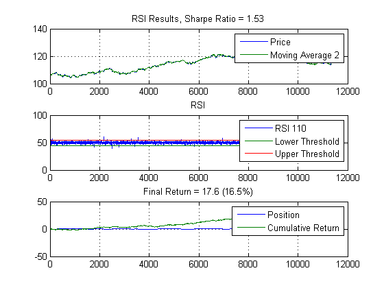
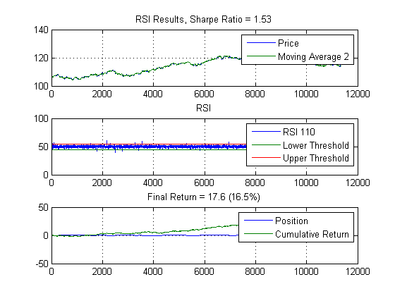 
Run on validation set
marsi(BundCloseV,param(1),param(2),param(3:4),param(5),annualScaling,cost)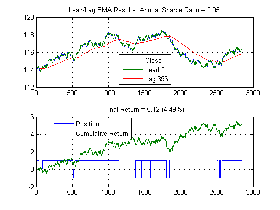 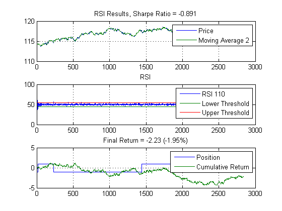 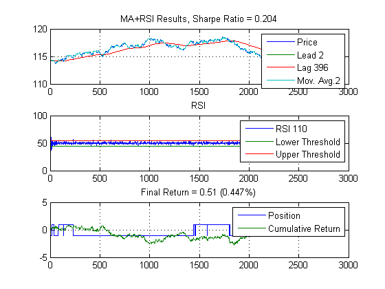
Note that the results are not that good. We're better on the calibration, but not on the validation. What we really need to do is set up a moving window for training and validation windows. For example, we could set up a window that takes up to 24 hours as the training set, and trades over the next say 6 hours, and then slide the window over by 6 hours and repeat This is one approach, but we really should add the window to the parameter sweep, or backtest over our historical data and identify which training/validation window is optimal. I'll leave this as an exercise, and we'll move on to how you can use genetic algorithm (or genetic programming) to find optimal combinations of trading signals that combine to make up a trading strategy (AlgoTradingDemo3.m).